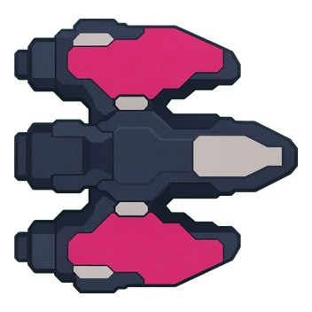
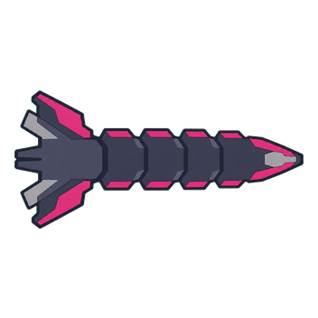
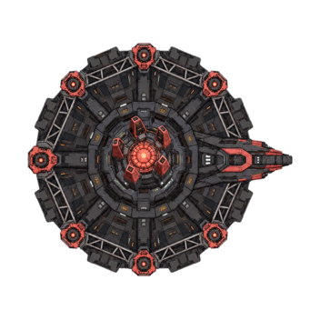
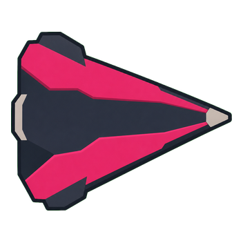
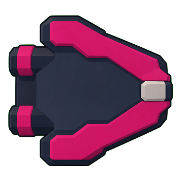
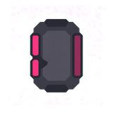
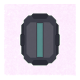

Phase shape
Phase 1 teaches, phase 2 adds, and phase 3 remixes. A phase needs a new rule, not only speed.
Topic 5 of 5 · Bosses
Each phase should teach, add, then remix a clear fight idea. Normal damage must stay useful.
| Topic | AS-IS | Approved TO-BE |
|---|---|---|
| Attack set | All five bosses use 4 direct attacks and 2 timed background attacks. | Give each boss a small, named rule set with clear player answers. |
| Later phases | Phase 2 and 3 mostly reorder attacks and make them faster. | P1 teaches one idea. P2 adds one rule. P3 combines both. |
| Objectives | Every boss has 2 external objectives in every phase. | Use external objectives for only 1–2 bosses, if they improve that fight. |
| Damage | Sealed damage is 20%. Open damage is 155%. | Normal damage must stay useful. Opening is a bonus, not the only real play. |
| Tuning | More health can hide a weak fight rule. | Fix the move, weakness, and phase mix before health values. |
Health rises each stage, but later phases mostly reorder the same stage set.
| Stage | Current boss | Base health | Current mix |
|---|---|---|---|
| 1 | Foundry Colossus | 1,250 | Lanes, charge, fan, ring + 2 background areas |
| 2 | Archive Leviathan | 1,350 | Fan, charge, cross, area + lanes and depth charge |
| 3 | Drydock Titan | 1,450 | Lanes, area, fan, charge + area and summon |
| 4 | Switchyard Behemoth | 1,550 | Charge, fan, area, beam + mines and sweep |
| 5 | Crown Engine | 1,650 | Cross, summon, beam, fan + lanes and rings |
Codex may revise these mixes after playtests. They show how later bosses gain rules, not only health.
| Boss | Core idea | Three-pattern base | Main weakness |
|---|---|---|---|
| Colossus | Learn the charge and punish its stop. | Charge, fixed fan, ground marker | Long recovery after a missed charge |
| Leviathan | Read gaps while the safe side changes. | Ring burst, aimed fan, homing set | Short side or rear opening |
| Titan | Choose which weapon to remove. | Rotating turret, sweeping beam, jump/slam | Break one boss-mounted weapon |
| Behemoth | Fight close for more damage while it keeps moving. | Charge, moving hazard lane, aimed stream | Close-range damage bonus |
| Crown | Remix learned rules with one final arena change. | Spiral, limited summons, arena squeeze | One clear weak-point window; one node phase may support it |
Phase 1 teaches, phase 2 adds, and phase 3 remixes. A phase needs a new rule, not only speed.
Closed-state damage remains worth doing. Do not make 20% versus 155% the whole fight.
Combat design picks each boss idea, three patterns, weakness, and final remix.
Encounter design selects at most 1–2 bosses where external objectives add a good choice.
Codex can set first health, damage, timer, and opening values. Playtest evidence then changes them.
These are existing runtime assets. They are evidence only; this page does not approve visual changes.









Use a few patterns with clear answers. Do not turn one boss into every pattern at once.
| Pattern | Simple player answer |
|---|---|
| Aimed stream | Move sideways after the lock. |
| Aimed fan | Move through the large gap. |
| Fixed fan | Learn the safe lane. |
| Ring burst | Find one gap or stay back. |
| Spiral | Follow one safe lane slowly. |
| Rotating turret | Cross the line before it locks. |
| Sweeping beam | Use the open end, cover, or one dash. |
| Ground marker | Leave early. |
| Charge | Step aside, then punish recovery. |
| Jump/slam | Leave the landing area, then attack. |
| Homing set | Group shots, then cut across. |
| Bouncing shot | Read the next wall path. |
| Moving hazard lane | Choose the safe side early. |
| Limited summons | Kill the key unit or survive its short timer. |
| Breakable weapon | Remove the attack that hurts this build most. |
| Open weak point | Use the short bonus window; normal damage still works. |
| Phase handoff | Read the cue and learn one new rule. |
| Arena squeeze | Pick a lane and save dash for the exit. |
Write one clear sentence.
Teach three fair player answers.
Give a position, timing, or target choice.
Add a rule; do not only reorder.
Combine learned rules and keep a fair opening.
Close bonus, side opening, breakable weapon, interruptible charge, hazard use, or selected external nodes.
Charge + aimed fan + moving hazard lane. Close attacks get a bonus, but the boss moves away often.
Rotating turret + sweeping beam + ground marker. Break one weapon to remove the hardest pattern for this build.
Ring burst + limited summons + arena squeeze. Use a neutral hazard to make a short damage opening.
Current pattern sequences: vehicle_boss_patterns.gd. Current objective modules: vehicle_boss_exam_catalog.gd. Product authority: vehicle game spec. Production art: asset manifest.
Earlier genre reading: dodging strategy, Battle Garegga boss notes, and Ikaruga notes. The 18 patterns keep only abstract combat rules. They do not copy art or exact attacks.